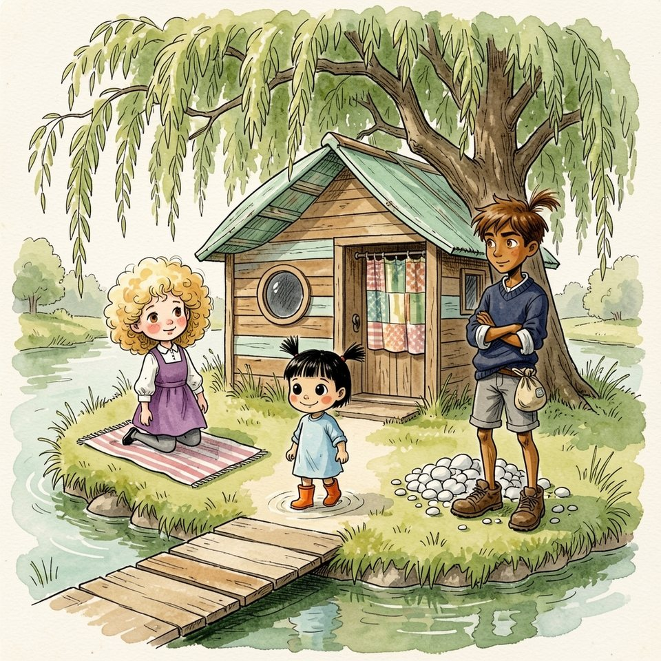

Titistoire › Les Comètes (6-8 ans)
Le Saut du Saule
Une année à Virevent, l'histoire du mois de juillet : Jeanne, Gaspard, Suzie et Marin.

▶ Écouter et regarder l'histoire
Gratuit, sans inscription : la voix lit, le texte suit mot à mot, les images tournent comme dans un album.
Le texte de l'histoire
En juillet, la Flânette ne coulait presque plus : elle faisait la sieste. Les ardoises brûlaient, et Madame Bogue avait rendu les ballons, d'un seul coup, comme chaque premier jour d'été.
Toute l'école, qui n'était plus l'école, se retrouvait au bout de l'île, là où l'herbe descendait dans l'eau. Gaspard y amarrait son bateau, La Tête de Mule ; le nom était de Suzie.
À cet endroit, une grosse branche du saule s'avançait au-dessus de la rivière, comme un bras tendu : le Saut du Saule. Vue d'en bas, elle n'était pas plus haute qu'une échelle de peintre. Vue d'en haut, c'était une autre affaire.
Suzie étendit sa serviette à l'ombre. Mimosa, qui la suivait partout, étendit la sienne par-dessus, puis entra dans l'eau avec ses bottes orange, pour ne pas marcher sur les poissons.
Sur la berge, tout le monde ruisselait. Jeanne dégoulinait, Garance tordait ses nattes. Seul Raoul était sec de la tête aux pieds, l'épi bien droit, un tas de cailloux blancs à côté de lui.
C'était Raoul qui avait fait la règle, le premier jour des vacances. « Ceux qui sautent sont des Braves. Les autres regardent. » Et comme il fallait un juge, il s'était élu lui-même, à l'unanimité.
Il donnait les points en cailloux, dix pour un saut parfait, zéro pour qui restait en bas, et les surnoms sans supplément : Gaspard était « le Notaire », Garance « Mademoiselle Première ».
« À toi, la Trompette ! » Jeanne courut sur la branche et se jeta dans le vide en hurlant de joie. Elle fit dans la rivière un trou énorme, qui éclaboussa jusqu'aux roseaux. Raoul recula d'un pas, vif comme un chat.
Elle ressortit, les boucles collées, les joues déjà rondes. « Vous n'allez pas me croire ! J'ai touché le fond ! Il y a une carpe, là-dessous, archi-énorme, grande comme une barque, et elle m'a regardée ! »
« Neuf », trancha Raoul en alignant ses cailloux. « Un de moins pour le bruit. » Gaspard sauta ensuite, tout droit, sans un cri, ses lunettes à la main. « Huit. Trop sérieux. »
Puis ce fut Garance. Elle marcha jusqu'au bout de la branche comme pour aller au tableau, très droite, se pinça le nez entre deux doigts, et entra dans l'eau sans un pli, à la façon d'un crayon.
« Dix ! » siffla Raoul. Garance regagna la berge, les lèvres serrées, les yeux très ronds, et s'enroula dans sa serviette jusqu'au menton. « Tu y retournes ? » demanda Jeanne. « Ce n'est pas la peine. Quand c'est parfait, une fois suffit. »
Suzie, sur sa serviette, se faisait oublier. Elle savait nager : Faustine lui avait appris, là où l'on voyait ses pieds. Mais elle n'aimait ni le vide, ni l'eau qui vous montait dans le nez et vous piquait jusqu'au front.
Elle comptait sur les libellules pour distraire tout le monde. Les libellules ne firent rien du tout. « Il en reste une », annonça Raoul en la désignant du menton. « À toi, Oui-Oui. »
« Vas-y, Suzie ! » trépigna Jeanne. « Tu vas voir, c'est rien ! C'est comme voler, mais mouillé ! » Toute la berge s'était tournée vers la serviette violette. Toute la berge souriait.
Suzie tortilla une boucle. Elle chercha quelque chose à répondre, et trouva ce qu'elle trouvait toujours. « Oui, oui… » Ses pieds se levèrent avant qu'elle leur ait rien demandé.
Mimosa lui emboîta le pas, ses bottes pleines d'eau faisant flic, flac. « Pourquoi tu y vas ? » « Parce que c'est mon tour. » « Pourquoi c'est ton tour ? » « Parce que tout le monde a sauté. »
« Pourquoi tout le monde a sauté ? » « Parce que c'est la règle. » « Pourquoi c'est la règle ? » « Parce que… Raoul l'a décidé. » « Pourquoi ? » Cinq pourquoi. Suzie était arrivée au bout de ses parce que.
« Attends-moi là », souffla-t-elle. Elle posa la main sur l'écorce. Le tronc penchait, creusé de prises comme un escalier. Il n'y avait qu'à monter. C'était bien l'ennui.
Elle monta. Une prise, puis une autre. En bas, les voix rapetissaient. Sur la branche, elle avança à quatre pattes, puis se mit debout, parce que les Braves, paraît-il, se tenaient debout. La branche bougeait. Pas beaucoup. Juste assez.
Au bout, elle regarda en bas. Ce fut une erreur. La rivière, si paresseuse vue de la berge, était d'ici très verte, très profonde et très loin. Tout au fond, une Suzie minuscule la dévisageait.
Et tout Virevent s'était tourné vers elle. Le beffroi la surveillait de son œil rond. Même la comète de la girouette pointait la queue dans sa direction.
Sur la berge, Raoul avait mis ses mains en porte-voix. Il se tenait là où l'herbe était haute et sèche, à trois bons pas de l'eau. « Alors, Oui-Oui ? On prend racine ? »
Le temps s'étira comme une pâte à pain. Midi sonna au beffroi ; il était donc midi cinq. Une feuille se détacha, tournoya, et se posa sur l'eau sans une éclaboussure. Suzie l'envia.
En bas, on s'impatientait gentiment. Quelqu'un frappa dans ses mains. Puis Jeanne lança son nom, coupé en deux, et la berge entière le reprit en cadence. « Su-zie ! Su-zie ! Su-zie ! »
C'était son nom, chanté par ses amis, et jamais il ne lui avait paru si lourd. Chaque « Su » la poussait dans le dos. Chaque « zie » lui tirait les chevilles.
Elle plia les genoux. Ses orteils s'agrippèrent à l'écorce, les dix ensemble, et refusèrent tout net. Ses orteils avaient un avis. Il y avait même longtemps qu'ils essayaient de le lui donner.
« Elle va sauter ! » claironna Jeanne. « Regardez, elle va sauter ! » Suzie ferma les yeux. Derrière ses paupières, il faisait rouge et doux. Elle y chercha du courage. Elle trouva autre chose.
Le mois dernier, elle avait crié non, trois fois, et il lui avait fallu toute une colère pour y arriver. Elle chercha sa colère. Elle n'en avait pas. Personne, ici, n'était méchant : on l'aimait, on l'attendait, voilà tout.
Alors comment faisait-on, quand on n'était pas fâchée ? Elle rouvrit les yeux. Elle regarda l'eau, puis ses orteils, puis ses amis. Et la réponse vint toute seule, sans faire de vagues.
« Non. » Elle ne l'avait pas crié. Elle l'avait posé là, comme on pose un pain sur le comptoir. « Je n'en ai pas envie. » Et elle souriait. En bas, la chanson s'arrêta au milieu de son nom.
« Quoi ? » fit Raoul, la main en cornet. « Je n'en ai pas envie », répéta-t-elle aimablement. Puis elle fit demi-tour sur la branche, avec précaution, comme dans un couloir étroit.
Elle redescendit par où elle était montée. Une prise, puis une autre. C'était plus malaisé dans ce sens-là, et jamais personne n'avait donné de points pour cela.
Ses pieds touchèrent l'herbe. Elle attendit que le ciel lui tombe sur la tête. Le ciel resta où il était. La Flânette continua de ne pas couler. Quelque part, une grenouille donna son opinion.
« Zéro », laissa tomber Raoul. Il n'avait pas pris de caillou : zéro, cela ne se posait pas. « T'es pas une Brave, Oui-Oui. » « D'accord », répondit Suzie. Et le plus étonnant, c'était que cela lui allait très bien.
Ce fut alors que Garance se leva, drapée dans sa serviette. « Ce n'est pas pour être méchante, mais c'était affreux. » « Quoi donc ? » « Le saut. J'ai eu de l'eau jusque derrière les yeux. Je ne recommencerai jamais. »
« T'as eu dix ! » protesta Raoul. « Je sais. Je garde mon dix », précisa Garance, « et je ne recommence pas. » Raoul ouvrit la bouche. Sa règle venait de prendre l'eau, et il ne voyait pas par où.
« N'empêche », gronda Raoul, « une règle, c'est une règle. » « Et toi ? » demanda Jeanne en s'ébrouant. « Tu sautes quand ? » « Moi, je compte. Faut bien quelqu'un. » Sa main s'était refermée sur son sac de billes.
Suzie le regarda. Elle regardait toujours les gens un peu trop longtemps ; c'était ainsi qu'elle voyait venir leurs chagrins avant eux. L'épi, dressé, sans une goutte. Le pull trop grand, sec jusqu'aux poignets.
Par terre, la berge était tamponnée de pieds mouillés, des grands, des petits. Autour de Raoul, il n'y avait que de la poussière. Et quand une vaguelette vint lécher l'herbe, il recula.
Une phrase vint à Suzie. Une phrase très courte, qui aurait fait sur cette berge plus de bruit que tous les sauts de Jeanne. Raoul vit qu'elle la tenait. Son épi ne bougea pas. Ses yeux, si.
Suzie garda la phrase. Elle la rangea tout au fond, là où elle rangeait autrefois ses avis. « Viens, Mimosa », lança-t-elle seulement, assez haut pour toute la berge. « On va là où on a pied. »
Là où l'on avait pied, l'eau était tiède comme un bain et claire comme une vitre. On y voyait ses orteils et trois vairons très occupés. Suzie y entra jusqu'aux genoux, bien en vue, sans se cacher de personne.
Mimosa pataugeait à côté, les bottes pleines. « Pourquoi on saute pas, nous ? » « Parce qu'on n'en a pas envie. » Mimosa réfléchit. « Ah », conclut-elle. Il n'y eut pas de deuxième pourquoi.
Elles bâtirent un barrage, puis un port, puis une île pour les vairons. Garance vint s'asseoir au bord, très droite, et trempa ses pieds sans un mot, là où l'eau s'arrêtait aux chevilles.
Jeanne sauta encore onze fois, parce qu'elle adorait cela. Entre deux sauts, elle venait admirer le port. « Ici, on a pied partout », expliquait Suzie d'une voix qui portait. « Même ceux qui n'ont jamais essayé. »
Sur la berge, Raoul rangeait ses cailloux par tas de dix. Il ne tournait pas la tête. Mais ses tas, cet après-midi-là, furent les plus lents qu'on lui ait jamais vu faire.
Le soleil descendit derrière le moulin. Un à un, les baigneurs remontèrent vers la ville, la peau sentant la rivière. Jeanne racontait déjà sa carpe, qui avait à présent des moustaches et un prénom.
Raoul resta le dernier. « Salut, Oui-Oui. » « Salut, Raoul », répondit Suzie. Il attendit une suite. Il n'y en eut pas. Il haussa une épaule dans son pull trop grand, et se pencha sur ses cailloux.
Suzie reconduisit Mimosa, les bottes faisant flic, flac tout le long de la rue. Devant sa porte, la petite s'arrêta net. « Ma serviette ! » Elle était restée là-bas, dans l'herbe, sous le saule.
« J'y vais », décida Suzie. Elle refit le chemin en sens inverse. Madame Bogue commençait sa tournée ; sur le quai des Saules, les premiers réverbères tremblaient dans l'eau. La planche de l'île ne fit presque pas de bruit sous ses pieds.
La serviette était là, pliée de travers, à la manière de Mimosa. Suzie la ramassa. Les tas de cailloux blancs luisaient encore dans l'herbe. Elle allait repartir quand elle entendit un tout petit bruit d'eau.
Au bout de l'île, là où l'on avait pied, quelqu'un était assis. Un pull trop grand, des manches roulées, un épi tout droit contre le ciel rose. Ses souliers étaient posés à côté de lui, bien alignés.
Raoul avança un pied vers la rivière. Il le trempa jusqu'à la cheville, et le retira aussitôt, comme si l'eau l'avait pincé. Il regarda autour de lui. Puis il recommença, un peu plus longtemps.
Derrière le rideau du saule, Suzie ne bougeait plus. Un pied, puis l'autre. Puis les deux ensemble, et un frisson qui secoua tout le pull.
Alors elle regarda ailleurs : la comète de la girouette, qui prenait les dernières lueurs, les fenêtres qui s'allumaient. Puis elle s'en alla sur la pointe des pieds. L'épi de Raoul était toujours parfaitement sec. Pour ce soir.